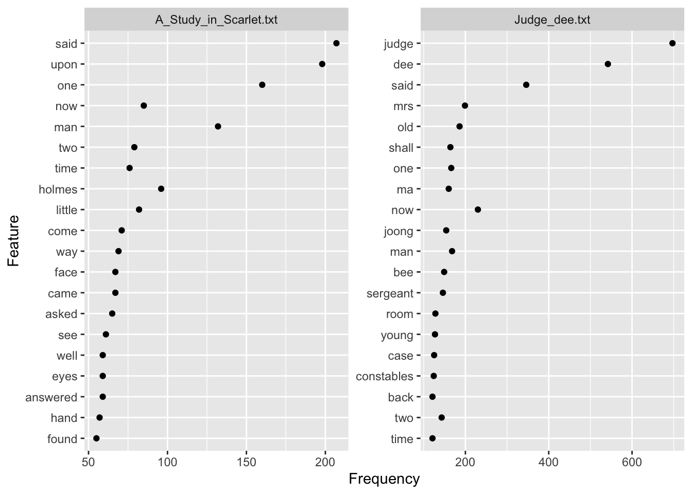

Chapter 6 第六章 文本数据分析
文本数据属于非结构化数据，通常需要通过分词、词性赋码等自然语言处理方法，将文本数据进行结构化。 在语言学研究中，语料库研究与文本最为相关。Tognini-Bonelli（2001）提出基于语料库（corpus-based）和语料库驱动（corpus-driven）的区分。基于语料库的研究将语料库用作验证研究者直觉或检查小型数据集中语言的频率和/或合理性的例子来源。研究者不会质疑预先存在的传统描述单元和类别。语料库驱动的分析则是一种更具归纳性的过程：语料库本身就是数据，分析过程中通过记录语料库中的模式来表达语言中的规律性（和例外情况）。语料库驱动的分析倾向于只使用关于语法结构的最低限度的理论预设。
在词汇层面的语料库研究中，我们一般会进行词频统计（Word Frequency Count），即统计词汇在语料库中的出现频率，以了解词汇的使用频率和分布情况，构建词表。其次，与参考语料库比较，我们可以进行关键词提取（Keyword Extraction）即识别出在特定语境或文本类型中特别频繁出现的词汇。
再者，如果对于某些特定词汇感兴趣，我们可以通过共现分析（concordance Analysis）研究哪些词汇经常一起出现，以了解词汇之间的关系和语境。
最后，通过collocation anlysis我们可以分析词组搭配。
除了对文本中的词汇进行分析，也可以通过词汇来分析文本的风格。词汇丰富度和可读性分析可以帮我们比较不同文本之间词汇复杂性的差异。在分析不同翻译文本的特征是我们常常用到。此外，通过文本中最高频的几百个词的频率特征我们可以解锁不同作家的创作指纹。这样的分析可以帮我们鉴定一些归属存疑的文本作品。
在R语言中常用的文本处理的程序包有tidytext和quenteda。他们各有不同的功能，同时彼此之间可以相互转化。
6.1 数据导入
library(tidyverse)
setwd("~/Nutstore Files/310_Tutorial/LanguageDS-e")
library(quanteda)
#install.packages("readtext")
require(readtext)
detectives.raw <- readtext("data/ch6/detectives/*txt")
corps.detectives = corpus(detectives.raw)
summary(corpus(corps.detectives), 5)## Corpus consisting of 2 documents, showing 2 documents:
##
## Text Types Tokens Sentences
## A_Study_in_Scarlet.txt 6313 51368 2736
## Judge_dee.txt 6010 79276 36866.2 数据整理
# make a dfm
dfm_detectives <- corps.detectives %>%
tokens(remove_punct = TRUE) %>%
tokens_remove(stopwords("en")) %>%
dfm()%>%
dfm_group(groups = book)
print(dfm_detectives)## Document-feature matrix of: 2 documents, 8,565 features (35.77% sparse) and 1 docvar.
## features
## docs study scarlet part _being reprint reminiscences of_
## A_Study_in_Scarlet.txt 11 4 14 1 1 2 1
## Judge_dee.txt 3 3 26 0 0 0 0
## features
## docs john h watson
## A_Study_in_Scarlet.txt 36 2 7
## Judge_dee.txt 0 0 0
## [ reached max_nfeat ... 8,555 more features ]## judge said dee one now man old two upon shall mrs time
## 701 553 542 326 315 300 225 222 217 207 204 197
## young room case back ma come see joong
## 179 177 167 166 160 158 156 1546.3 词汇特征
6.3.1 词频提取与词表构建
词频是语料库语言学最基本的概念。频率可以以原始数据的形式给出，例如在某个文本中，某个词出现了58次；或者可以以百分比或比例的形式给出，某个词在每百万词中出现602.91次。这使得可以在不同大小的语料库之间进行比较。
通过对语料库中每个词进行词频统计编制的词表可以用来生成关键词列表。
library("quanteda.textstats")
library("quanteda.textplots")
dfm_detectives.freq <- textstat_frequency(dfm_detectives,
n = 20,
groups = book)
ggplot(dfm_detectives.freq,
aes(x = frequency, y = reorder(feature, frequency))) +
geom_point() +
labs(x = "Frequency", y = "Feature")+
facet_wrap(~ group, scales = "free") 
6.3.2 关键词提取
在语料库语言学中，关键词分析（keyword analysis）是一种通过与参考语料库进行比较，识别出在特定语料库中出现频率异常高（正关键词）或异常低（负关键词）的词语的方法。
关键词（Keyword）是指在一个文本或语料库中，与参考语料库相比，出现频率显著高于或低于预期的词语。通常，使用统计测试（如对数似然检验或卡方检验）来比较两个词表，以得出关键词。 参考语料库（Reference corpus）是一个平衡且代表性的语料库，通常用于关键词分析中提供参考词表。在关键词分析中，通过与参考语料库的比较，可以发现哪些词在特定语料库中是关键的。
在关键词分析中，一个词可能仅仅因为在某些文本中频率极高，而被误认为是关键词。为了确认一个词是否真的具有代表性，可以使用分布图查看这个词在整个语料库中的分布，或者计算在多个文本中均为关键词的词汇列表，以避免因不均匀分布导致的偏差。
6.3.3 上下文中的关键词索引（KWIC）
索引（Concordance）是指在语料库中按照字母顺序排列的搜索模式索引，显示该搜索模式在每个上下文中的出现。上下文中的关键词索引（Key-Word-In-Context Concordance，简称KWIC）是一种显示关键词在语料库中实际使用情况的工具或方法。具体来说，KWIC 索引会将目标关键词放在中心位置，并显示该词在文本中的所有出现位置，同时显示它前后的一定数量的单词或词组。这种排列方式可以帮助研究者观察关键词在不同上下文中的用法和意义。
例如，如果你想研究英语中“education”一词的用法，KWIC 索引会将所有包含“education”的句子或句段列出，展示该词左右的上下文。这样，研究者就可以一目了然地看到“education”在不同语境下的使用方式，并分析其频率、搭配、语法特征以及语义变化。
KWIC 索引在语料库语言学中被广泛应用，因为它能够帮助研究者深入理解词语在实际语言使用中的行为，而不仅仅是关注词频等表面数据。
toks_corpus_detectives <- corps.detectives%>%
tokens(remove_punct = TRUE)%>%
tokens_remove(stopwords("en"))
kwic(toks_corpus_detectives , pattern = "murder") %>%
head()%>%
as.data.frame()## docname from to pre
## 1 A_Study_in_Scarlet.txt 3864 3864 second individual 8 presumably murderer
## 2 A_Study_in_Scarlet.txt 4560 4560 case continued turning two detectives
## 3 A_Study_in_Scarlet.txt 5492 5492 across table constable get arresting
## 4 A_Study_in_Scarlet.txt 5747 5747 little art jargon scarlet thread
## 5 A_Study_in_Scarlet.txt 6186 6186 reason eyes finding ring connected
## 6 A_Study_in_Scarlet.txt 8837 8837 must stayed room little time
## keyword post pattern
## 1 murder committed reminds circumstances attendant death murder
## 2 murder done murderer man six feet murder
## 3 murder said one hounds wolf Mr murder
## 4 murder running colourless skein life duty murder
## 5 murder come come shall see within murder
## 6 murder found blood-stained water basin washed murder## docname from to pre keyword
## 1 Judge_dee.txt 2617 2618 bamboo still faced original problem commit crime
## post pattern
## 1 thus ruminated Sergeant Hoong set commit crimetextplot_xray(
kwic(toks_corpus_detectives, pattern = "murder"),
kwic(toks_corpus_detectives, pattern = "judge"),
kwic(toks_corpus_detectives, pattern = "police"),
scale = "absolute")## Warning: Use of `x$ntokens` is discouraged.
## ℹ Use `ntokens` instead.6.3.4 搭配分析
搭配分析（collocation analysis）是语料库语言学中的一种方法，用于研究词汇之间的共现关系，即在自然语言中某些词语经常一起出现的现象。搭配分析通过识别和分析这些词语的共现频率和模式，可以揭示出词语之间的语义或语法关系。
搭配（Collocation）：搭配是指两个或多个词在特定的上下文中经常一起出现。例如，在英语中，“strong”常常与“tea”搭配，而“powerful”则很少与“tea”搭配。类似地，“make a decision”和“take a photo”也是常见的搭配。
搭配强度（Collocational Strength）：搭配强度是衡量词语之间共现关系的紧密程度。它通常通过统计方法计算，比如互信息（Mutual Information，MI）或t检验（t-score）等。高搭配强度表明这些词语经常一起出现，并且比随机出现的可能性大得多。
搭配范围（Collocational Range）：搭配范围指的是词语在多大范围内（比如在前后几个词内）出现的频率。例如，“make”在前面紧跟着“decision”或“mistake”时，是一个常见的搭配，这个范围通常称为“window size”。
搭配分析的应用： 1. 语言学习： 搭配分析有助于语言学习者理解哪些词语经常一起使用，从而提高语言的自然性和流利度。例如，学习者可以通过搭配分析了解“do homework”比“make homework”更自然。
词典编纂： 词典编纂者使用搭配分析来确定哪些词语组合应该被列为固定搭配，从而为使用者提供更准确的词语用法信息。
语义分析： 通过分析一个词的搭配，可以推测其语义。例如，“dark”通常与“night”搭配，而“dark”与“mood”搭配时，可以暗示“mood”是消极的。
搭配分析是通过统计方法研究词语之间的共现关系，揭示语言使用中的规律性和隐含语义。它在语言研究、教育和自然语言处理等领域具有广泛的应用。
toks_corpus_detectives%>%
#提取包含大写字母的专有名词
tokens_select(pattern = "^[A-Z]",
valuetype = "regex",
case_insensitive = FALSE,
padding = TRUE) %>%
textstat_collocations(min_count = 5,
size = 3,
tolower = FALSE)## collocation count count_nested length lambda
## 1 Mrs Bee Mrs 9 0 3 2.2919763
## 2 Mr Joseph Stangerson 5 0 3 0.1381491
## 3 Six Mile Village 31 0 3 -1.9053123
## 4 Mr Sherlock Holmes 7 0 3 -3.2857683
## 5 Old Mr Hua 6 0 3 -2.9543269
## 6 Joong Chiao Tai 26 0 3 -6.0239003
## 7 Salt Lake City 8 0 3 -7.4583249
## 8 Halliday's Private Hotel 5 0 3 -9.1930925
## 9 Ma Joong Chiao 26 0 3 -6.6460942
## 10 Chiao Tai Ma 5 0 3 -8.0017108
## 11 Tai Ma Joong 5 0 3 -7.7720469
## 12 Dragon Boat Festival 5 0 3 -10.8024934
## 13 Warden Ho Kai 29 0 3 -8.5385706
## 14 Bee Mrs Djou 7 0 3 -4.8207475
## 15 Excellency Judge Dee 5 0 3 -6.6373310
## z
## 1 1.36609804
## 2 0.06382149
## 3 -0.64514763
## 4 -1.32091898
## 5 -1.39733298
## 6 -2.11855345
## 7 -2.49079675
## 8 -2.63393615
## 9 -2.66082620
## 10 -2.79263343
## 11 -3.08084494
## 12 -3.32080583
## 13 -3.38490330
## 14 -3.77602086
## 15 -4.109868596.4 文本风格分析
6.4.1 词汇多样性
词汇丰富度（Lexical Richness）是指在语言学和语言习得研究中，用来衡量一个人使用语言时，所表现出的词汇多样性和复杂程度的指标。它反映了一个人语言表达的广度和深度，具体而言，就是在一个语言片段中，使用多少不同的词汇以及这些词汇的复杂性。
词汇丰富度通常通过以下几个方面来衡量：
类型-标记比率（Type-Token Ratio, TTR）：这是最常见的词汇丰富度衡量指标。类型指的是不同的词汇种类，而标记指的是词汇的总数。类型-标记比率就是不同词汇种类数与总词汇数的比值。TTR 比值越高，表示词汇丰富度越高，但它会受到文本长度的影响。
词汇密度（Lexical Density）：衡量一个文本中实词（如名词、动词、形容词、副词）所占的比例。高词汇密度意味着文本中使用了较多的实词，相对内容较为丰富。
平均词长（Mean Word Length）：平均词长可以作为词汇复杂性的一种衡量方式，通常较长的词汇意味着较高的词汇丰富度。
稀有词汇比例（Proportion of Rare Words）：这个指标衡量的是在文本中使用的稀有或不常见词汇的比例。稀有词汇使用越多，词汇丰富度通常越高。
D值（D-measure）：这是一个更复杂的指标，试图通过建模解决 TTR 中的文本长度影响问题，提供一个更稳定的词汇丰富度衡量方式。
词汇丰富度的分析在二语习得、语言能力评估、心理语言学等领域中具有重要意义。通过衡量一个人词汇丰富度，可以判断其语言能力、表达能力、认知水平，甚至可以用来诊断语言障碍或认知功能衰退。
lexical.diversity <- textstat_lexdiv(dfm_detectives, measure = "all")
lexical.diversity.df = lexical.diversity%>%
as.data.frame()%>%
# mutate(id = 1:n())%>%
# filter(id >1 )%>%
select("document","TTR","C","R","K","D","Vm")%>%
gather("measures", "values", -c("document"))%>%
mutate(measures = as.factor(measures),
measures = fct_relevel(measures, "TTR","C","R","K","D","Vm"))
lexical.diversity.df## document measures values
## 1 A_Study_in_Scarlet.txt TTR 0.288416556
## 2 Judge_dee.txt TTR 0.153516445
## 3 A_Study_in_Scarlet.txt C 0.874239515
## 4 Judge_dee.txt C 0.820550958
## 5 A_Study_in_Scarlet.txt R 40.446244676
## 6 Judge_dee.txt R 28.429985636
## 7 A_Study_in_Scarlet.txt K 10.631269445
## 8 Judge_dee.txt K 18.348438591
## 9 A_Study_in_Scarlet.txt D 0.001063181
## 10 Judge_dee.txt D 0.001834897
## 11 A_Study_in_Scarlet.txt Vm 0.030621422
## 12 Judge_dee.txt Vm 0.040915379## 移动窗口词汇丰富度
lexical.mattr <- textstat_lexdiv(tokens(corps.detectives),
measure = "MATTR", MATTR_window = 500)
lexical.mattr## document MATTR
## 1 A_Study_in_Scarlet.txt 0.5203928
## 2 Judge_dee.txt 0.49705086.4.2 文本可读性
readability <- textstat_readability(corps.detectives, measure = "all")
readability.df = readability %>%
select("document","ARI","Flesch","FOG",
"Coleman.Liau.short","Dale.Chall","Spache")%>%
gather("measures", "values", -c("document"))%>%
mutate(measures = as.factor(measures),
measures = fct_relevel(measures, "ARI","Flesch","FOG",
"Coleman.Liau.short","Dale.Chall","Spache"))6.4.3 文本信息熵
文本信息熵（Textual Information Entropy）是信息理论中的一个概念，用来衡量文本中信息的复杂性和不确定性。它是由克劳德·香农（Claude Shannon）在1948年提出的，并广泛应用于语言学、计算机科学和信息论等领域。
信息熵的基本概念：
不确定性（Uncertainty）：信息熵反映了一个系统的不确定性程度。如果某个事件的发生是完全确定的，那么其信息熵为零；相反，如果事件的发生非常不确定，其信息熵则较高。
概率分布（Probability Distribution）：信息熵的计算基于事件出现的概率分布。在文本处理中，这通常意味着计算某个字母、单词或符号在整个文本中出现的概率。
香农熵（Shannon Entropy）：这是信息熵最常用的形式，表示为： \[ H(X) = -\sum_{i=1}^{n} P(x_i) \log_2 P(x_i) \] 其中，\(H(X)\) 是信息熵，\(P(x_i)\) 是事件 \(x_i\) 发生的概率，\(n\) 是可能的事件总数。对于文本信息熵，事件通常是字符、单词或其他文本元素的出现。
文本信息熵在语言学中的应用：
通过计算文本的熵，可以分析文本的语言复杂性。熵值越高，意味着文本的信息量大、复杂性高；熵值越低，意味着文本更为简单、信息量较少。
## document entropy
## 1 A_Study_in_Scarlet.txt 11.24657
## 2 Judge_dee.txt 10.717686.4.4 文本情感分析
library(dplyr)
library(stringr)
library(tidytext)
tidy_books <- detectives.raw %>%
unnest_sentences(sentence, text)%>%
group_by(doc_id) %>%
mutate(linenumber = row_number()) %>%
ungroup() %>%
unnest_tokens(word, sentence)
tidy.sent = tidy_books %>%
inner_join(get_sentiments("bing")) %>%
count(doc_id, index = linenumber %/% 80, sentiment) %>%
pivot_wider(names_from = sentiment, values_from = n, values_fill = 0) %>%
mutate(sentiment = positive - negative)## Joining with `by = join_by(word)`library(ggplot2)
ggplot(tidy.sent , aes(index, sentiment, fill = doc_id)) +
geom_col(show.legend = FALSE) +
facet_wrap(~doc_id, ncol = 2, scales = "free_x")# 进一步看看哪些积极或者消极的词
bing_word_counts <- tidy_books %>%
inner_join(get_sentiments("bing")) %>%
group_by(doc_id) %>%
count(word, sentiment, sort = TRUE) %>%
ungroup()## Joining with `by = join_by(word)`